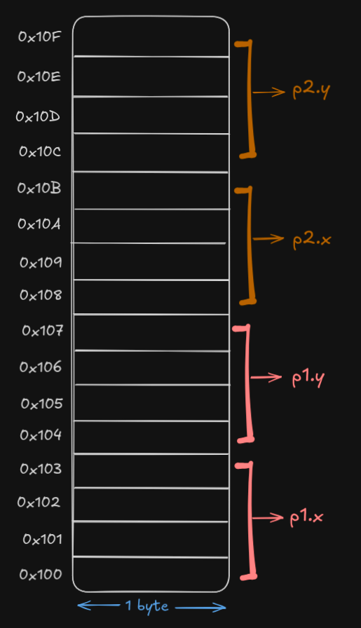

As we've already discussed, an IA32 CPU has eight 32-bit registers. These registers can be used to store integer data as well as pointers.
note that the whole discussion is regarding 32-bit systems.
All register names start with %e (eg: %eax, %ebx, etc). This naming comes
from the original 8086 processor, where registers were 16 bits in size and later extended to 32 bits in size (hence
the prefix e).
The first six registers (%eax, %ebx, %ecx, %edx,
%esi and %edi) are mostly general purpose, meaning they can be used freely by
instructions. However, some instructions require specific registers as sources or destinations.
- Note that calling conventions (rules for functions/procedures) treat the first three registers
(%eax, %ecx, %edx) differently from the next three (%ebx,
%esi, %edi) when saving/restoring values.
The last two registers (%esp and %ebp) are special and used for stack management (they
store pointers to locations in the stack) and they should be modified according to standard conventions.
Most instructions have one or more operands, which are source values to reference in performing an
operation. For example, when adding the numbers x and y, the operation is
addition while the operands are x and y.
As shown in the previous figure, there are different types of operands:
Immediate operands are basically constant values. In the AT&T format of assembly code, they're written with a
$ followed by an integer using the standard C notation.
movl $5, %eax moves the value 5 into the register %eax.note that standard C notation simple means that decimal (base 10) numbers are written normally (eg: 42, -577), hexadecimal (base 16) numbers are written with a 0x prefix (eg: 0x1F for 31), and octal (base 8) numbers are written with a leading 0 (eg: 075 for 61).
Operations can use registers as a source/destination for fetching/storing data. Registers are denoted with a
% followed by the register name.
- For example: movl %eax, %ebx copies the content of the eax register into the
ebx register.
The computer memory could also be used to fetch/store values. To specify that a value is a memory address in the
AT&T format, it's enclosed within ().
- For example: movl (%eax), %ebx means "fetch the value at the memory address stored in the
eax register, and copy it into the ebx register" (so eax contains some memory
address (assume it's 0x12345678) the data stored in that memory address is the number
42984027, so now 42984027 is copied into the ebx register, and note that
movl specifies a long to be moved, which takes up four memory addresses).
For data structures stored in memory, calculating the memory address of an element is done using four components:
i.Note that memory addresses are typically written in hex, while the displacement, index and scale values are written in decimal.
To calculate the address of a data structure element:
address = displacement + base + (index × scale)In the AT&T assembly format, the general way to denote a memory address is as follows:
displacement(base, index, scale)movl (%eax), %ebxmovl specifies that we're moving a long, which is 4 consecutive bytes..
(%eax) means that we're accessing the value stored in the memory address stored in the
eax register.
eax, take the value stored there
and copy it into the ebx register.movl 4(%ebp), %eax4(%ebp), 4 is the displacement. So if the address stored in the ebp
register is 0x100, we will access 0x100 + 4 which is 0x104.0x104 to the eax register.
movl (%ebx,%ecx), %edx(%ebx,%ecx) is following the syntax displacement(base, index, scale), particularly
base and index.
ebx is the base, the value in ecx is the index. To find
the effective memory address, which is the memory address we're trying to access, add the index
to the base.ebx holds the value 0x100, and ecx holds the value 4,
this means that we're trying to access the element at 0x104.movl will copy a long starting from the effective address into the
edx register.
1. Meaning, in order to get to the element we
want at index 4, we skipped 4 bytes. This means that each element is 1 byte
in size. If the elements were integers for example, we would scale the index by 4.movl (%ebx,%ecx,4), %edxbase, index and scale (in the form of
(base, index, scale)).
ecx by 4 and add it to the
value inside ebx.ecx was 2 which means "the third element" (remember we start from
zero), and the value at ebx was 0x100 which means that the base (starting) memory
address is 0x100, then the scale 4 will be multiplied by 2 and added to
0x100, resulting in 0x108, allowing us to access the third element.
movl 4(%edx, %eax, 8), %ecxdisplacement(base, index, scale).eax by 8, add it
to the value in edx and add 4.struct Point{
int x;
int y;
};
This code will define a new user-defined type called Point, which will be 8
bytes in size. This type consists of two fields: x and y, where x is at
offset 0 and y is at offset 4. (similar to object attributes in other
programming languages).
We can create elements of this struct type using the following code:
// create two points
struct Point p1;
struct Point p2;
// assign x and y values to each point
p1.x = 5;
p1.y = 10;
p2.x = 3;
p2.y = 8;
In memory, these elements will look kinda like this:
As we can see, the scale is 8 bytes, which is the size of one "Point". To access the second Point for
example, we use the index 1 multiplied by the scale 8
which results in 8, then we add that to the base memory address which is 0x100, resulting
in the memory address 0x108 (the address where the second Point p2 begins).
Now say we want to access p2.y and not simply p2, for that we will utilize a displacement
of 4 added to the memory address 0x108, resulting in 0x10C (112 in decimal).
And in the ATT notation we would write that as
4([register containing base address], [register containing index], scale).